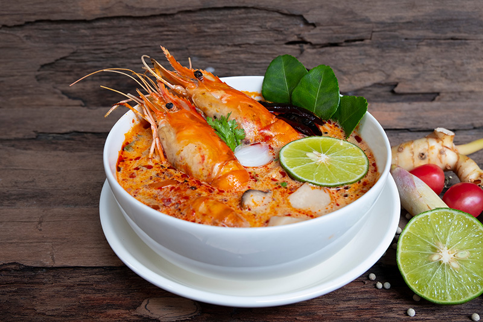
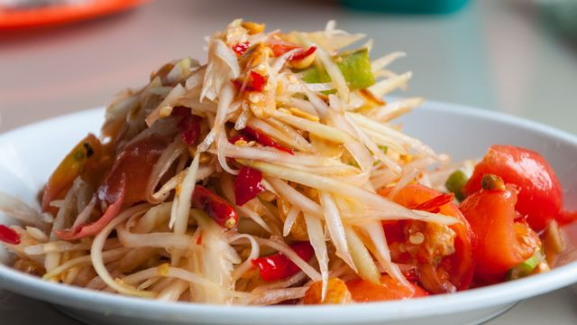

อาหารท้องถิ่นในกรุงเทพฯ
หน้าหลัก
สถานที่ท่องเที่ยว
ประเพณี
ที่พัก
ข้อมูลผู้จัดทำ
อาหารท้องถิ่น 3 อย่างในกรุงเทพฯ
ผัดไทย - เส้นจันท์ผัดกับไข่และกุ้ง
 ต้มยำกุ้ง - ซุปกุ้งรสเผ็ดเปรี้ยว
 ส้มตำ - สลัดมะละกอรสเผ็ดเปรี้ยว
 ผัดไทย - เส้นจันท์ผัดกับไข่และกุ้ง
ผัดไทย - เส้นจันท์ผัดกับไข่และกุ้ง
ผัดไทย - เส้นจันท์ผัดกับไข่และกุ้ง
ผัดไทย - เส้นจันท์ผัดกับไข่และกุ้ง